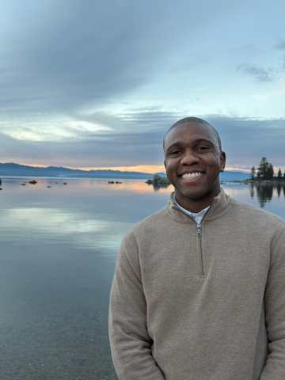

Lead complex systems
Stand up new functions, move significant resources through complicated delivery systems, and build operating structures that hold across independent organizations.
Leadership · Innovation · Empowerment · Mission
Public-sector executive, strategist, researcher, and speaker working on the connective problems that determine whether people and institutions can turn ambitious ideas into durable impact.
“Our greatest potential lies beyond the limits of our own imagination and what we believe is possible.”


About
I was born in Bulawayo and grew up in Zimbabwe through some of the country's most challenging economic years. I learned resilience by watching people keep making a plan, keep learning, and keep moving even when circumstances offered very little certainty.
My career has since crossed finance, private-sector management, public service, statewide education leadership, governance, applied research and entrepreneurship. I have served on the board of a community credit union and as a trustee in one of the world's largest public retirement systems.
I completed a Doctorate in Leadership and Innovation at the University of the Pacific. Across each chapter, the question has been similar: how do we bring people, resources and systems into better alignment with the mission?
The work
The breadth matters because complex problems rarely stay inside one lane. I do my best work where the problem is important, the stakeholders are different, and the path forward is not obvious.
Stand up new functions, move significant resources through complicated delivery systems, and build operating structures that hold across independent organizations.
Use evidence, experimentation and the expertise closest to the work to adopt new tools without losing judgment, agency or mission.
Create spaces where executives, practitioners, public agencies, advocates and partners can move from different interests toward shared direction.
Research
My doctoral research used participatory action research to examine how public-sector professionals could explore generative AI through training, structured experimentation and shared learning. The people doing the work were not treated simply as end-users of a rollout; they were co-researchers who helped shape how the technology could serve their work.

Speaking
I speak about human-centered AI adoption, empowerment, organizational alignment, innovation and the discipline of optimism—with the goal of leaving people more hopeful, more practical and more capable of acting than when we started.
Featured keynote: Empowering the People Who Power Organizations: AI Adoption Starts With People.
“The future should be something people help shape—not something that simply happens to them.”Dr. Geqigula Dlamini
For keynotes, panels, leadership sessions, research conversations or collaborations, share a little about your audience and what you want them to leave with.